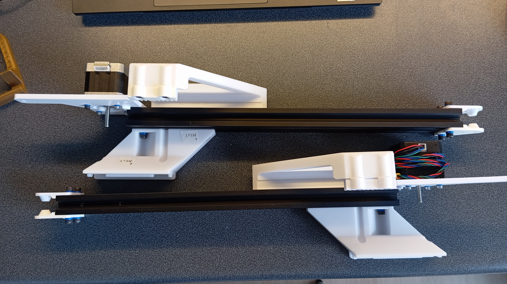
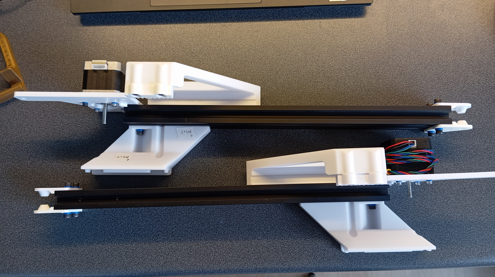
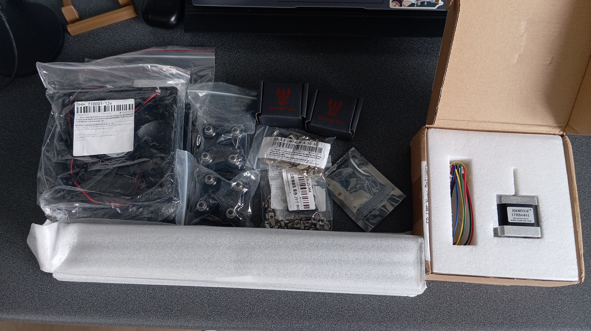
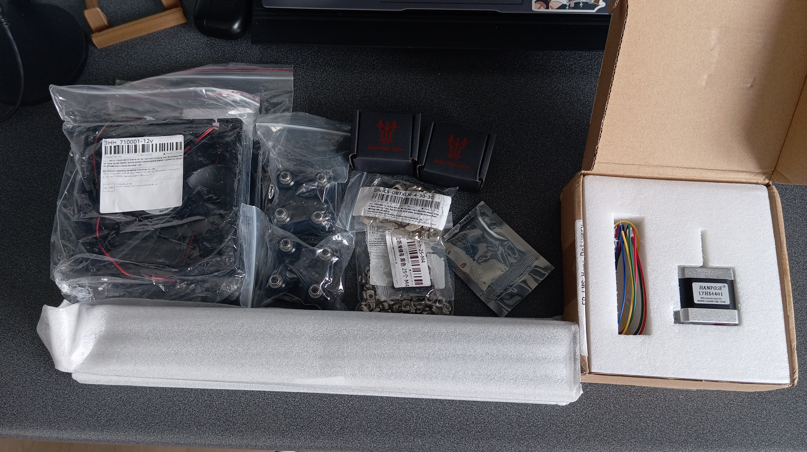

AutoEjector: Automated Model Removal System for 3D Printers


 



Project Description
After several months of freelance projects involving 3D design of laboratory equipment, I was offered a task directly related to my engineering specialization. The goal was to create a system that automatically removes finished models from the 3D printer bed (in this case, Prusa MK3S) and starts the next print without user intervention.
The project was based on an existing concept from GitHub, but as often happens, practice proved much more complex than theory. Despite an optimistic estimate of completing everything in a couple of weeks, the project stretched over several months and encompassed numerous aspects: from mechanical refinements to developing a custom OctoPrint plugin.
Implementation
Hardware Components
The work began with analyzing materials provided by the client. Besides the printer itself, I received partially printed parts, filament, and electronics. Compatibility issues with PCB components emerged during preparation - some electronic elements lacked corresponding footprints in EasyEDA, while others needed replacement, such as fan connectors.

Certain components listed in the original schematic proved unnecessary - relays and LED ports went completely unused. It turned out that some printed parts were missing, so I printed them myself.

Materials arrived over the course of a month, and later several additional orders were required.

 

Initial assembly revealed multiple mismatches: some holes were too small, screws were longer than needed, and some parts completely lacked mounting holes. This necessitated redesigning certain components like motor mounts for increased rigidity and compensating for inconsistencies with plastic washers of varying thickness.


After mechanical adjustments, I ordered a revised PCB version. The order included three blank boards and two partially assembled ones, costing ~€44. Minimal soldering was required - just Arduino headers and stepper motor drivers.

Power Supply
The system was powered by the printer's PSU (24V), requiring difficult terminal disconnections. The design specified 12V fans connected through a linear voltage regulator. This configuration failed - the regulator overheated, entered protection mode, and wouldn't reset without complete power cycling.

I replaced it with an adjustable LM2596-based DC-DC converter which performed flawlessly. However, one fan soon failed (likely defective) and required replacement.

Control Software Integration
The entire system was controlled through OctoPrint on Raspberry Pi. The Arduino connected via USB and communicated with the Pi through Serial, enabling command exchange for stepper motor and fan control.


Software Development
The original project only included a Python script and Arduino firmware. The script was non-functional, while the firmware required significant modifications. I had to:
- Redesign serial commands
- Adjust stepper motor control functions
- Implement proper status handling and feedback
- Monitors print completion
- Sends model ejection commands to Arduino
- Initiates new prints after successful removal confirmation
Challenges
Development wasn't without technical setbacks. I accidentally burned several stepper drivers (one while adjusting current, likely by shorting contacts with a multimeter probe; two others from incorrect PCB installation). One incident damaged Arduino SPI pins, but I implemented software SPI emulation and manually soldered wires to alternative pins.

These issues significantly slowed progress, but fortunately the client remained patient. There were hundreds of failed attempts and tests, some recorded for documentation but unsuitable for this article.
Results
The final prototype successfully performs all required functions. However, the project isn't truly complete - the current version suits experienced users more than general consumers. The next step will likely involve developing a more refined and reliable second version.